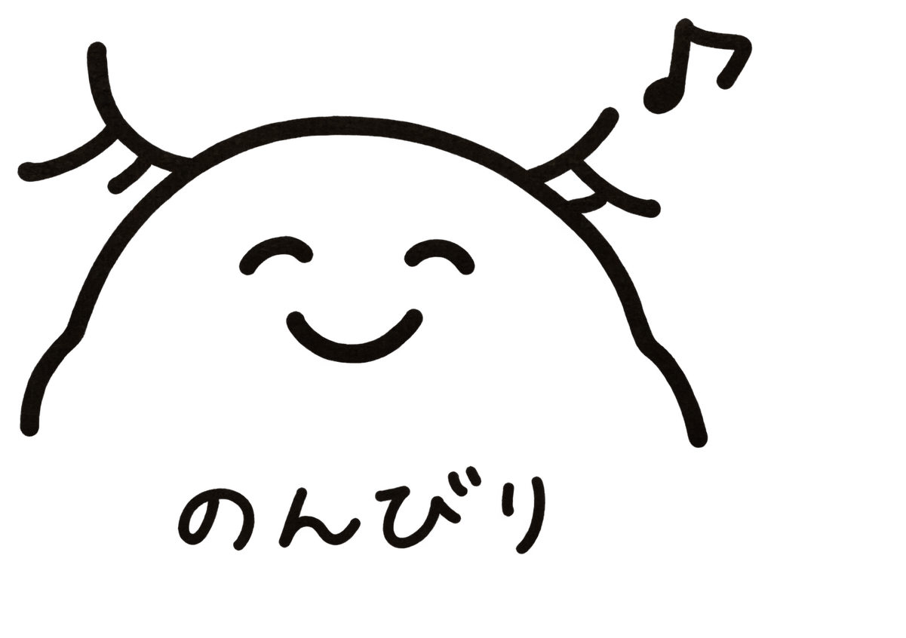

プログラム
講演時間：招待講演は30分（質疑応答を含む）、ショートトークは15分（質疑応答を含む）です。招待講演では、休憩時間中に演者の方へ直接質問・議論できる時間も設ける予定です。
| 内容 | 開始 | 終了 |
|---|---|---|
| DAY 1 | ||
| 受付 | — | 14:00 |
| Introduction | 14:00 | 14:30 |
| Session 1 | 14:30 | 16:00 |
| Break | 16:00 | 16:30 |
| Flash talk 1 | 16:30 | 17:30 |
| Break | 17:30 | 17:45 |
| Flash talk 2 | 17:45 | 18:45 |
| Dinner + Poster session 1 | 19:00 | 23:00 |
| DAY 2 | ||
| Flash talk 3 | 09:00 | 09:45 |
| Break | 09:45 | 10:00 |
| Session 2 | 10:00 | 11:30 |
| Break + Photo session | 11:30 | 12:00 |
| Lunch | 12:00 | 14:00 |
| Session 3 | 14:00 | 15:00 |
| Break | 15:00 | 15:30 |
| Session 4 | 15:30 | 16:30 |
| Break | 16:30 | 17:00 |
| Session 5 | 17:00 | 18:00 |
| Break | 18:00 | 18:30 |
| Session 6 | 18:30 | 19:00 |
| Dinner + Poster session 2 | 19:00 | 23:00 |
| DAY 3 | ||
| Session 7 | 09:00 | 10:00 |
| Break | 10:00 | 10:30 |
| Session 8 | 10:30 | 11:30 |
| Break | 11:30 | 12:00 |
| Closing remark | 12:00 | 12:30 |
| 退館 | — | 13:00 |
